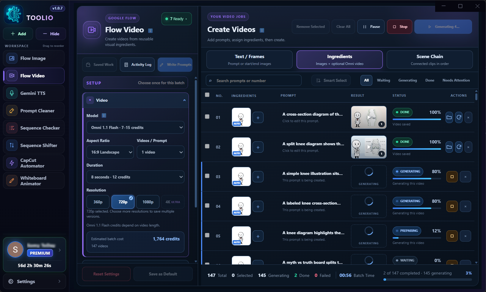

Automate More.
Create Faster.
Run video, image, voice, CapCut, and numbered-media workflows from one Windows app. Toolio handles repetitive steps using your own supported accounts and available credits.
Toolio connects to supported services using your own eligible accounts and available credits. Google accounts, generation credits, API credits, and third-party subscriptions are not included.

Download Toolio Automation for Windows
Download the official Windows installer and access Toolio's generation workflows and built-in media utilities.
Toolio Setup v1.0.7
Official Windows Installer
Quick Installation Steps
Download Toolio
Click “Download Toolio.Setup.exe” to get the official Windows installer.
Install
Open the installer and follow the Windows installation prompts.
Open Toolio
Sign in, activate your subscription if required, and choose the workflow you need.
What's New in Toolio
See verified changes as Toolio is prepared for release.
Version 1.0.7
Current BuildGeneration Workflows
- NEW Added organized batch workflows for Flow Video and Flow Image.
- NEW Added Gemini TTS script splitting and batch voice-part generation.
- NEW Added multi-account readiness and credit visibility for supported Google services.
Built-in Utilities
- IMPROVED Added guided CapCut project preparation and synchronization.
- NEW Added configurable whiteboard-style animation workflows.
- NEW Added Sequence Checker and Sequence Shifter for numbered media files.
- NEW Added Prompt Cleaner for removing repeated patterns from prompt batches.
Tools inside Toolio
Explore the generation workflows and media utilities included in the Toolio desktop app.
Flow Video
Create and manage video batches using Text/Frames, Ingredients, and Scene Chain workflows.
Flow Image
Create image batches from prompts and references, with parallel jobs and live progress.
Gemini TTS
Split long scripts into voice parts and generate them in batches with voice, style, pace, accent, and audio-profile controls.
CapCut Automator
Prepare and synchronize CapCut projects through a guided workflow with project checks and preview steps.
Whiteboard Animator
Turn image batches into configurable whiteboard-style animations with drawing, timing, hand, color, processing, and output controls.
Sequence Checker
Scan numbered files to find missing and duplicate sequence numbers before processing.
Sequence Shifter
Preview and shift numbered file ranges forward or backward with padding, conflict handling, and undo support.
Prompt Cleaner
Remove repeated prefixes or patterns from batches of prompts while preserving the remaining text.
Other Tools
Toolio extensions and separate utilities will be listed here.
No other tools yet
Your Chrome extensions and standalone Toolio utilities will appear here when they are ready.
Suggestions
Vote on approved ideas or sign in to add your own.
Loading approved suggestions…
Join the Toolio Community
Follow releases, receive important updates, and connect with other Toolio users.
Telegram Channel
Official Announcements — Get release notifications, download links, and critical maintenance notices.
Telegram Community
Discussion & Troubleshooting — Ask questions, share workflows, and connect with other creators.
WhatsApp Channel
Broadcast Updates — Fast, direct release alerts and platform status right on your phone.